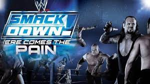

Grand Theft Auto: San Andreas (sering disingkat sebagai GTA: SA atau GTA: San Andreas)
adalah permainan video laga-petualangan yang dikembangkan oleh Rockstar North
dan diterbitkan oleh Rockstar Games. Permainan ini adalah permainan 3D ke-7 dalam seri Grand Theft Auto
yang ke-5 pada rilis konsol dan permainan ke-7 secara keseluruhan.
Pada awalnya dirilis untuk PlayStation 2 pada bulan Oktober 2004
permainan ini kemudian di pemortakan ke Xbox dan Microsoft Windows
kini yang baru rilis Android dan menerima penerimaan dan penjualan yang tinggi pada tiga platform tersebut
dan mendapat rekor penjualan permainan tertinggi di PlayStation 2.
Grand Theft Auto: San Andreas diteruskan oleh
Grand Theft Auto: Liberty City Stories dan didahului oleh
Grand Theft Auto: Vice City.
Smackdown Pain

WWE SmackDown! Inilah Rasa Sakitnya (dikenal sebagai Exifying Pro Wrestling 5 di Jepang)
adalah video game gulat profesional yang dikembangkan oleh Yuke's dan diterbitkan oleh THQ untuk PlayStation 2
di Amerika Utara pada tanggal 27 Oktober 2003. Ini adalah sekuel dari WWE SmackDown! Shut Your Mouth
game kelima dan terakhir di WWE SmackDown! serial berdasarkan World Wrestling Entertainment (WWE).
Naruto Ultimate Ninja 5
Naruto Shippuden:Ultimate Ninja 5 (dikenal di Jepang sebagai Naruto Shippuden: Narutimate Accel 2
(Naruto Shippuden: Narutimetto Akuseru 2)) adalah video game pertarungan Jepang untuk PlayStation 2
berdasarkan seri manga dan anime Naruto oleh Masashi Kishimoto
sekuel dari video game Naruto Shippuden: Ultimate Ninja 4
Permainan ini dirilis di Jepang pada tahun 2007
namun peluncurannya di Eropa berlangsung pada tanggal 27 November 2009 .
Game ini mewakili seri Ultimate Ninja terbaru untuk Playstation 2 dan merupakan satu-satunya yang memiliki dubbing bahasa Jepang
karena tidak dirilis di Amerika Utara. Ini juga merupakan angsuran terakhir dengan nama asli serial tersebut di Barat.
Sengoku Basara 2
Sengoku Basara 2 (戦国BASARA2) adalah sekuel dari Sengoku Basara asli dan dirilis di Jepang untuk PS2 pada tanggal 27 Juli 2006.
Permainan ini di-porting ke Wii pada tahun 2007 sebagai bagian dari Sengoku Basara 2 Heroes: Double Pack
Ekspansi berjudul, Sengoku Basara 2 Heroes , dirilis pada tahun 2007.
Game ini menandai ulang tahun pertama seri tersebut dan dianggap telah memulai "Sengoku Boom" di seluruh Jepang.
Ledakan Sengoku memicu minat baru terhadap sejarah Jepang (terutama periode Sengoku pada masa feodal Jepang,
sesuai dengan namanya) di mana orang-orang di Jepang pergi ke museum, kastil
dan medan perang untuk mempelajari lebih lanjut tentang sejarah kehidupan nyata dari Jepang. berbagai karakter Sengoku Basara
membeli merchandise yang berkaitan dengan seri game dan periode Sengoku, dan membeli video game yang berlatar periode Sengoku.
Downhill Domination
Downhill Domination adalah permainan video genre olahraga balap sepeda.Game ini dirilis untuk PlayStation 2
Ada tiga opsi yang tersedia di menu utama, single player (pemain tunggal)
multiplayer (multipemain) dan menu options (opsi) yang memungkinkan pemain untuk memodifikasi elemen gameplay seperti
tingkat kesulitan dan melihat item tidak terkunci yang telah didapat selama bermain.
Awalnya,pemain diberi pilihan enam pembalap fiksi yang ditampilkan di atas gunung setelah mode pemain tunggal dipilih dari menu utama permainan
dengan menekan tombol pilih pada pembalap yang tidak dikunci
info tambahan dari pembalap akan ditampilkan dan dengan menekan tombol pilih pada karakter yang dikunci dan hanya ditampilkan dalam bentuk patung
info penting tentang cara membuka pemain yang terkunci tersebut akan ditampilkan seperti career (karier) tertentu yang harus diselesaikan.
Selain dua pembalap fiksi lainnya, pemain juga dapat membuka pembalap bersepeda profesional seperti Eric Carter dan Tara Llanes ketika turnamen tertentu berhasil dimenangkan.
Sambil bersepeda pemain juga dapat menyerang pembalap lain. Pemain dapat menggunakan dua tombol untuk menyerang pembalap lain, satu untuk serangan kiri, dan yang satunya lagi untuk kanan.
Serangan ini dapat ditingkatkan menjadi serangan yang lebih kuat dengan melakukan trik, mengalahkan lawan, atau mengumpulkan power-up (dikenal dalam game sebagai "pickup").
Toko sepeda dengan beberapa item yang tidak dapat dibuka untuk dibeli tersedia tetapi hanya dapat diakses dalam mode pemain tunggal.
Hingga empat pemain dapat memainkan permainan ini, tetapi saat bermain dengan lebih dari dua pemain, trek dan mode yang tersedia menjadi terbatas.